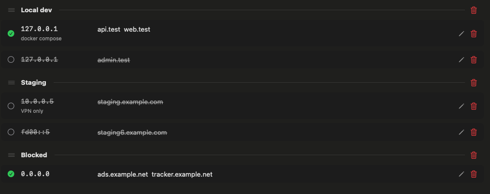
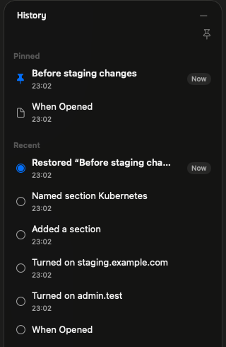
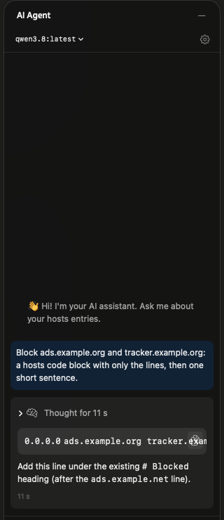

Sections you can dragแบ่งหมวดแล้วลากจัดเรียงได้
A blank line and a # heading make a section. ⌘-click several rows and drag them together.บรรทัดว่างกับ # หัวข้อคือหนึ่งหมวด กด ⌘ แล้วคลิกเลือกหลายแถว ลากไปพร้อมกันได้เลย

A free macOS app that edits /etc/hosts safely, with validation, automatic backups and an optional AI assistant. แอป macOS ฟรีที่แก้ /etc/hosts อย่างปลอดภัย ตรวจความถูกต้อง สำรองไฟล์อัตโนมัติ และมีผู้ช่วย AI ให้ใช้เมื่อต้องการ


Your existing file is read as it is. Comments, spacing and line endings stay exactly where you left them.แอปอ่านไฟล์เดิมตามที่เป็นอยู่ comment ช่องว่าง และการขึ้นบรรทัดใหม่ยังอยู่ครบเหมือนเดิม
A blank line and a # heading make a section. ⌘-click several rows and drag them together.บรรทัดว่างกับ # หัวข้อคือหนึ่งหมวด กด ⌘ แล้วคลิกเลือกหลายแถว ลากไปพร้อมกันได้เลย

localhost and broadcasthost can't be edited, toggled or deleted, so macOS keeps working.localhost และ broadcasthost แก้ ปิด หรือลบไม่ได้ macOS จึงทำงานได้ตามปกติ
⌘F filters by IP or hostname as you type.⌘F กรองตาม IP หรือชื่อโฮสต์ขณะพิมพ์
History lists your last 30 saves by what changed. Double-click one to go back, and pin the versions you want to keep.ประวัติแสดง 30 การบันทึกล่าสุดตามสิ่งที่เปลี่ยน ดับเบิลคลิกเพื่อย้อนกลับ และปักหมุดเวอร์ชันที่อยากเก็บไว้

Preview Raw shows what will be written. Import any hosts file, or export an identical copy.Preview Raw แสดงสิ่งที่จะถูกเขียนลงไฟล์ นำเข้าไฟล์ hosts อื่น หรือส่งออกสำเนาที่ตรงทุกตัวอักษรได้
# Local dev ## docker compose 127.0.0.1 api.test web.test # 127.0.0.1 admin.test
Liquid Glass on macOS 26 and Sukhumvit Set type. Light, Dark or System, 16 accent colours and 8 gradient themes.Liquid Glass บน macOS 26 และฟอนต์ Sukhumvit Set เลือก Light, Dark หรือตามระบบ สี accent 16 สี และธีม gradient 8 แบบ
Only a small helper can write /etc/hosts, and every save goes through the same five checks.มีเพียง helper ตัวเล็กเท่านั้นที่เขียน /etc/hosts ได้ และทุกการบันทึกต้องผ่าน 5 ขั้นตอนเดิมเสมอ
IP addresses and hostnames are checked, and 127.0.0.1 localhost must stay.ตรวจ IP และชื่อโฮสต์ และต้องมี 127.0.0.1 localhost เสมอ
If another app changed the file, nothing is overwritten. The app reloads instead.ถ้าแอปอื่นแก้ไฟล์ไปแล้ว จะไม่เขียนทับ แอปจะโหลดไฟล์ใหม่แทน
The previous file is saved first. The last 30 versions are kept.บันทึกไฟล์เดิมเก็บไว้ก่อน เก็บ 30 เวอร์ชันล่าสุด
A crash in the middle of a save can't leave a half-written file.แม้เครื่องค้างระหว่างบันทึก ไฟล์ก็ไม่เสียครึ่งๆ กลางๆ
New entries work right away, no restart needed.รายการใหม่ใช้ได้ทันที ไม่ต้องรีสตาร์ต
The helper only answers the exact copy of Hosts Manager it ships with, checked by code signature. Other apps on your Mac can't use it to change your hosts file.helper จะตอบเฉพาะ Hosts Manager ตัวที่มาด้วยกันเท่านั้น โดยตรวจจาก code signature แอปอื่นในเครื่องจึงใช้มันแก้ไฟล์ hosts ไม่ได้


AI Agent
Chat with an assistant that sees your current entries, or let it write the comment for a new one.คุยกับผู้ช่วยที่เห็นรายการของคุณ หรือให้ช่วยเขียนหมายเหตุของรายการใหม่
Also by the same authorจากผู้พัฒนาคนเดียวกัน
The same window and the same ideas, for .git/info/exclude. Hide local files from git status without touching your team's .gitignore.หน้าตาและแนวคิดเดียวกัน แต่สำหรับ .git/info/exclude ซ่อนไฟล์ส่วนตัวจาก git status โดยไม่ต้องแตะ .gitignore ของทีม

The same window and the same ideas, for AI voice-overs. Write a script scene by scene, listen free with your Mac's voices, then generate it with Gemini TTS.หน้าตาและแนวคิดเดียวกัน แต่สำหรับเสียงพากย์ AI เขียนบทเป็นฉาก ลองฟังฟรีด้วยเสียงของ Mac แล้วสร้างเสียงจริงด้วย Gemini TTS

Free and open source. Setup takes about a minute.ฟรีและโอเพนซอร์ส ติดตั้งเสร็จในประมาณหนึ่งนาที